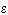

|
3.1. Методика решения.
Запишем для уравнения (10.4) явную разностную схему
(соблюдая правило выбора конечной разности для аппроксимации первой производной по координате):
В разделе 6.2.1 было доказано, что данная разностная схема условно устойчива. Условием устойчивости
является соотношение (6.3), которое для случая k = 0 имеет вид:
Следовательно, максимальное значение шага итерации, при котором разностная схема (10.6) будет устойчива, определяется следующим выражением:
Выражая из разностной схемы (10.6) величину  , получаем рекуррентное соотношение
которое с учётом равенства (10.7) преобразуется к виду:
Метод установления с использованием явной разностной схемы называют методом простой итерации,
а выражение (10.8) - формулой простой итерации. Равенство (10.7) определяет шаг итерации
для метода простой итерации. , получаем рекуррентное соотношение
которое с учётом равенства (10.7) преобразуется к виду:
Метод установления с использованием явной разностной схемы называют методом простой итерации,
а выражение (10.8) - формулой простой итерации. Равенство (10.7) определяет шаг итерации
для метода простой итерации.
В качестве нулевой итерации (начального условия, необходимого для решения
в связи с введением фиктивной производной по времени) обычно задают свободный член исходного
дифференциального уравнения (10.3):
Расчёт итераций следует продолжать до тех пор, пока итерационный процесс не сойдётся,
т.е. пока не будет выполняться условие (10.5), в разностном представлении соответствующее неравенству:
где  - некоторая наперёд заданная положительная величина, характеризующая точность вычислений.
|